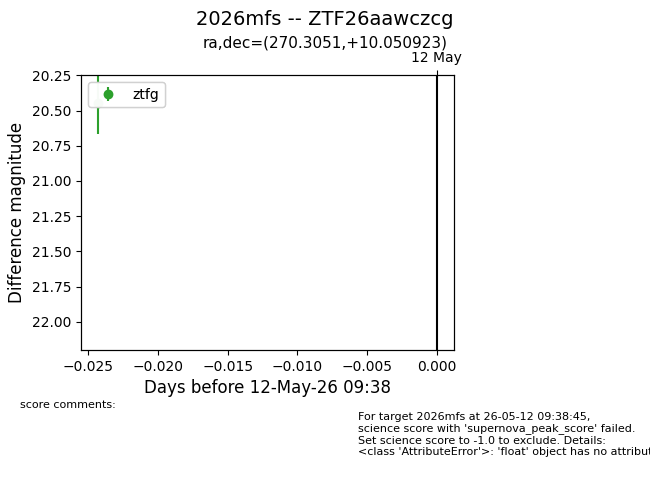
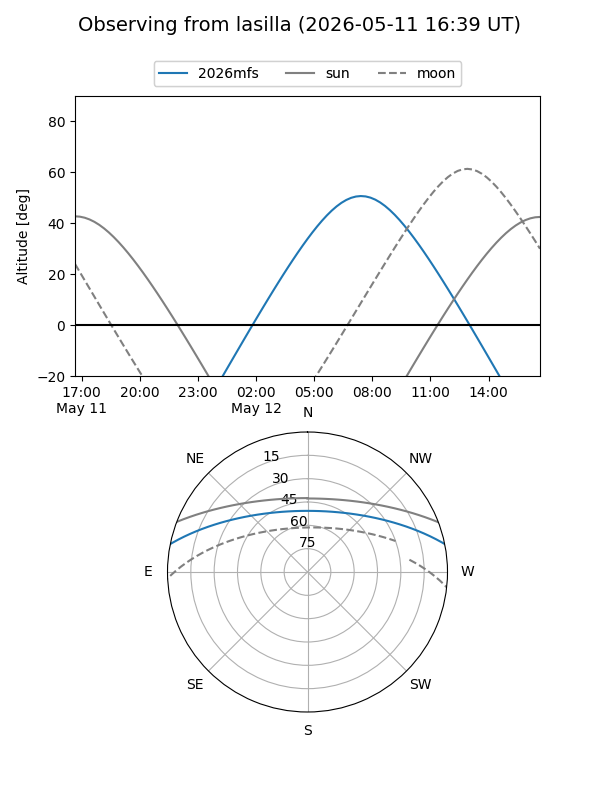
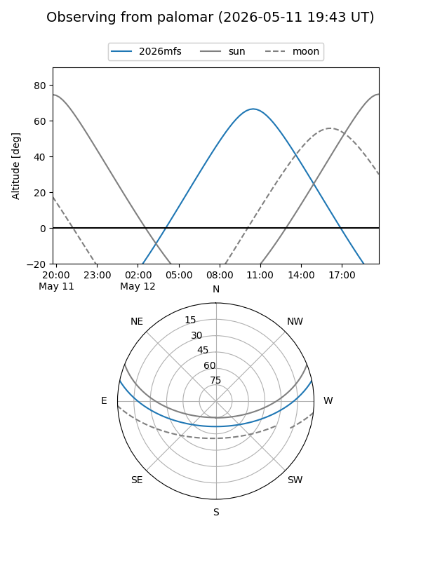
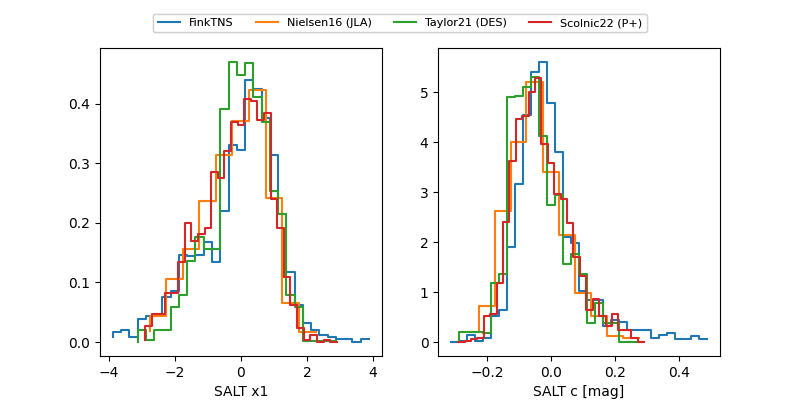

2026mfs
Target 2026mfs at 2026-05-12 09:40
Aliases and brokers:
FINK: link
Lasair: link
ALeRCE: link
TNS: link
YSE: link
alt names
ZTF26aawczcg (ztf,fink_ztf)
2026mfs (tns,yse)
Coordinates:
equatorial (ra, dec) = 270.3051,+10.05092
equatorial (HMS+DMS) = 18:01:13.22,+10:03:03.32
galactic (l, b) = (36.3693,+15.66808)
Flags:
Photometry:
last ztfg=20.45
1 ztfg detections
Lightcurve

Visibility


Additional plots
